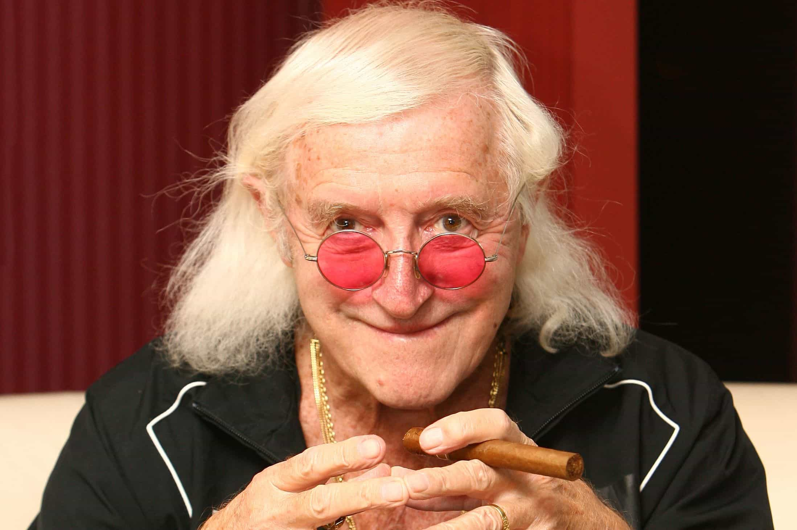

< < < Back
British Police “Investigate” Long Dead British Prime Minister Over “Sex Abuse” Claims – Return Of Kings
Spurred on by the scandal involving late comedian Jimmy Saville, which led to the SJW lobby demanding more convictions (without emphasis on due process for the accused), five British police forces are now investigating the late British Prime Minister Sir Edward Heath for child sex abuse. Meanwhile, the central accuser, a 1990s brothel keeper, was convicted for “controlling prostitutes” and jailed for sex years, substantially undermining her credibility.
The focus on “historical sex abuse allegations” is simply out of control. Not because sexual abuse didn’t happen in the past, but rather because of the ubiquitous watering-down of “beyond reasonable doubt” to produce demanded convictions. Sir Edward is not only not here to defend himself, the allegations go so far back and would be so unsupported evidentially that any posthumous “finding” against him would make a mockery of the justice system.
The myth of rape culture is watering down the justice system

Because Jimmy Saville was never prosecuted, SJWs want more convictions of other men, with little emphasis on the evidence actually against them and how this compares to the evidence needed for convictions for other categories of crime.
You cannot secure a conviction of tax evasion against someone based on testimony or mere allegations. Short of CCTV footage or DNA and other “hard” evidence (like finding stolen money or items at a suspect’s home), it is also supremely unlikely that courts would convict someone of robbery for crimes this year, let alone 30 or 40 years ago. Why are rape and child sex accusations treated so differently, requiring much more subjective and doubtful “evidence”?
Irrespective of the outcome, the memory and legacy of Sir Edward, an already undervalued Conservative Prime Minister, will be forever besmirched. With poorly supported statistics, feminists and SJWs have created for many in the public the illusion that rape is an epidemic not only occurring in society but one reinforced by even the highest elites.
Suddenly, by taking surveys, which oftentimes additionally expand the definition of sexual assault to include “impoliteness” like “catcalling,” these do-gooders can claim that we need more convictions to reflect the true proportion of “victims.”
Devoid of context and creating witch hunts

The scales of justice are beyond skewed when it comes to unsupported sexual assault allegations.
Feminists conveniently discard the context of rape and sexual abuse allegations. Whereas an alleged physical assault that occurs in a club or on the street is much more easily proven, via CCTV and other evidence, what occurs in a bedroom or similar private location is harder to pin down.
Because of this, SJWs implicitly (or sometimes explicitly) argue that the answer is to make much more doubt acceptable in the “beyond reasonable doubt” formula, i.e. believe the woman. This is why, for example, more objective evidence like bank statements pointing to undeclared income are necessary in tax evasion cases and not with rape accusations.
Rather than the culture at large “supporting rape,” it is a matter of being able to prove rape in a manner consistent with what is expected for other crimes. And if rape is so promoted by society, why does it never happen publicly? At every nightclub precinct in the Western world, “privileged” males will attack members of their own gender (but strangely not women) in front of a hundred people or more, but one never sees a man penetrate a woman against her will in a public place.
If violence is at an all-time low, how can rape and child abuse be at an all-time high?

In between writing clickbait articles, it would be nice if people like Jessica Valenti could explain why other crimes need so much more evidence than sexual assault allegations.
I believe that many in the police force secretly regret the fact that these investigations against Sir Edward have started. Many regard the police as a law unto themselves, but they are often at the mercy of outside pressures that force them to focus on particular crimes or begrudgingly support the pet projects of SJWs. Moreover, as a part of the executive arm of government, police must respond to the dictates of political considerations. The separation of police from other institutions of government is by no means total.
The whole saga with Sir Edward raises serious doubts about the veracity of “rape” and similar sexual abuse statistics. In a number of my articles I have mentioned Harvard academic Steven Pinker, who argues comprehensively that violence rates are now the lowest in history. These findings do not at all accord with the quotidian feminist promulgation of rape culture, especially in universities allergic to due process.
Despite Dr. Pinker’s cogent analysis, SJWs maintain that 1 in 5 female university students are “sexually assaulted” in the space of just three to five years of tertiary education. Unsurprisingly, they do not elaborate on how many or which kinds of men supposedly commit these crimes, but they load essentially all the “blame” onto all their male fellow students.
Based on these made-up statistics, university-educated men in first-world countries, who have the most to lose from a rape allegation, commit sexual assault at the highest rate of any group in any society on planet Earth.
Like Sir Edward, other men accused of sexual assault will never get an iota of sympathy from the SJWs actively hunting them down. Not even the grave protects you nowadays.
Read More: British Police Chief Will Prioritize Online Abuse Reports Over Burglaries